At Minnesfjället, people of times past spent their lives digging at the hillsides, filling their lungs with stone particles and eventually dying from not being able to breathe. ¯\_(ツ)_/¯
A bunch of religious dudes who lived by the creed Ora et labora wanted to build a monestary around Lugnås, but they realized that the stone around the surface sucked, as it shattered and wasn't all that good.
So they dug deeper and found that it still sucks for building religious monuments.
They did find that the gneiss a bit down was very cool for making millstones, and being good guys, they taught the farmers around how earn some extra bucks making millstones.
And so the farmers lived from ~1150 to 1800, getting some extra cash making millstones.
Then industrialization hit, people got drafted to work for wages, and they kinda realized that it's easier to dig beneath the earth to get at the layer they want instead of having to move all the uninteresting crap above the quality stone. So they started making "proper" mines. This lasted until ~1905 when people realized you can make stuff in neat shapes out of binder and aggregates.
Quarnstensgruvan/Minnesfjället is now a kind of museum with some more or less collapsed open pit mines and a proper mine that stretches some 30 meters into the hillside. According to the guides, other mines could go hundreds of meters. The mine at Minnesfjället probably contained stone of lesser quality, so the workers skedaddled elsewhere in hunt for better rocks.
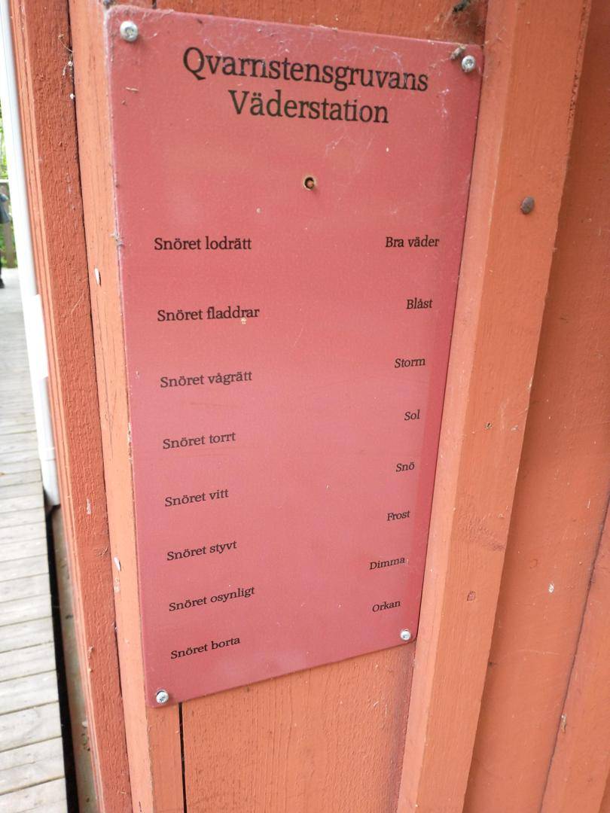
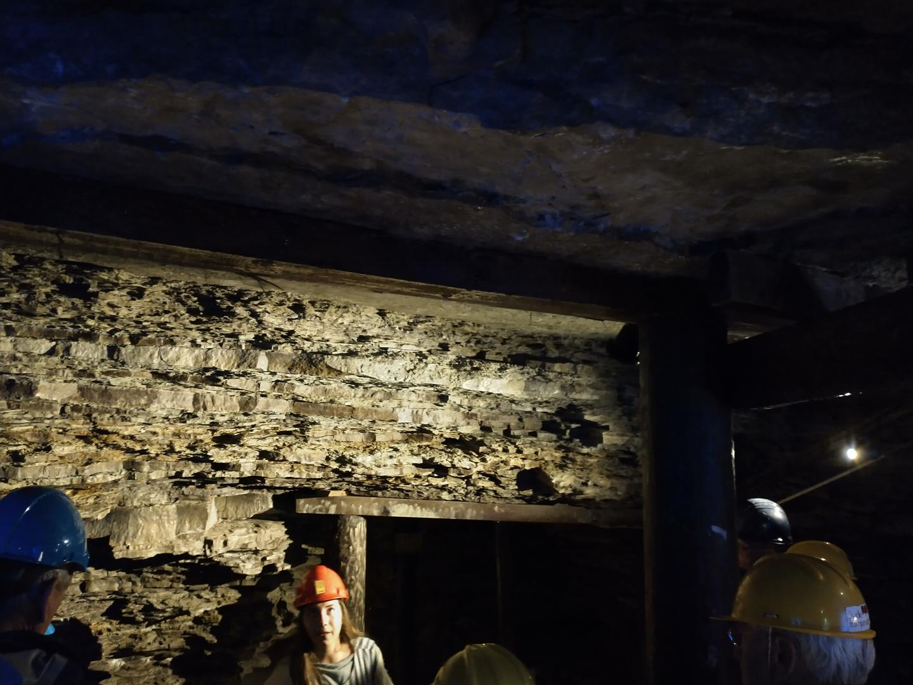
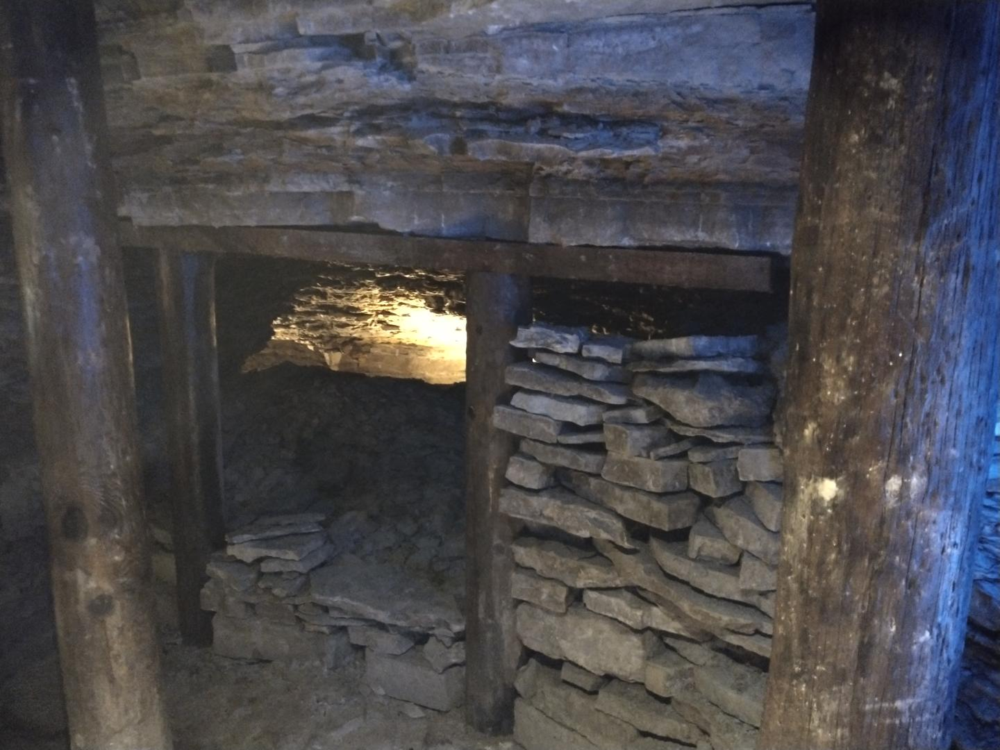
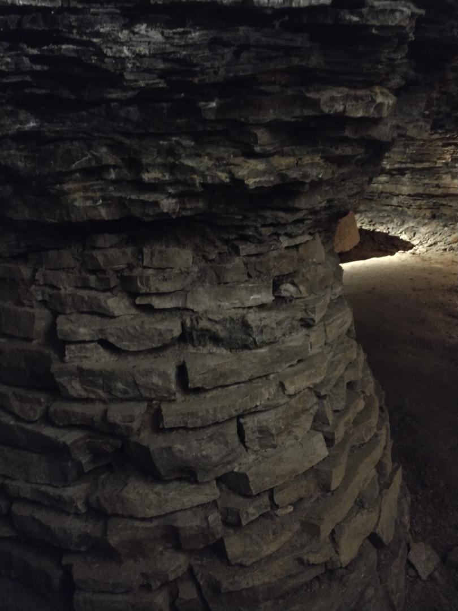
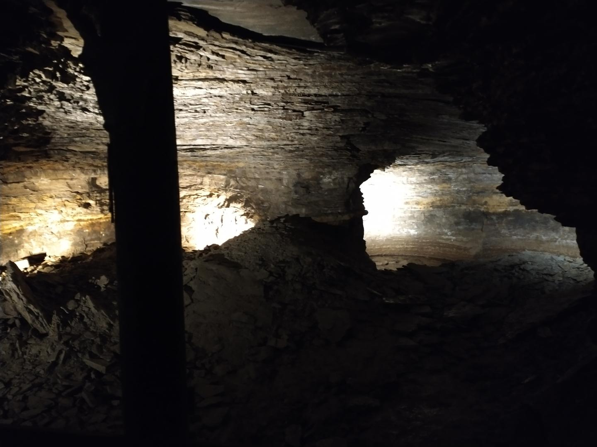
Kinda extremely cool to be able to see the changes in the rock strata like this. They apparently dug until they found a layer of extra thicc sedimentary stone which they knew was chonky enough to support the weight of the roof.
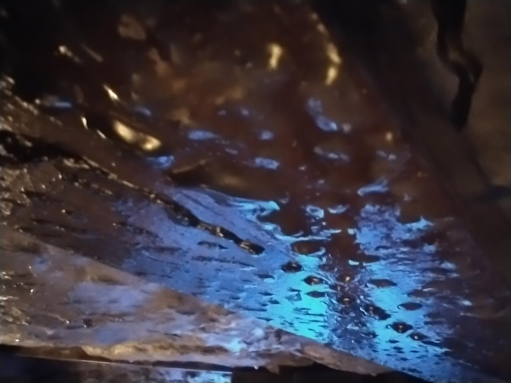
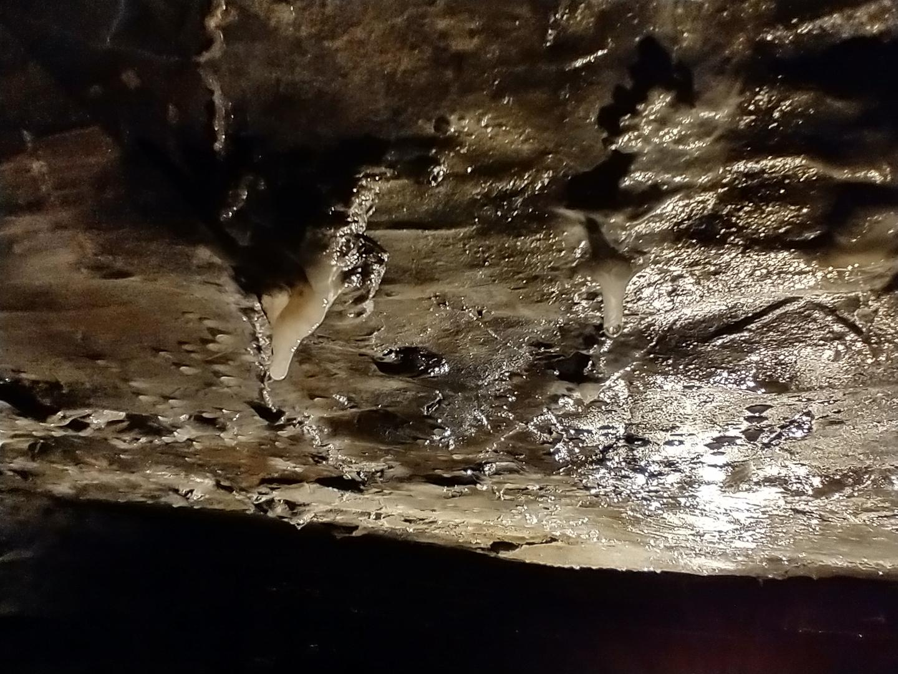
Some way from the mines there's a field where millstones got placed for display or something. Each stone weighs around 3000kg, which is kinda substantial.
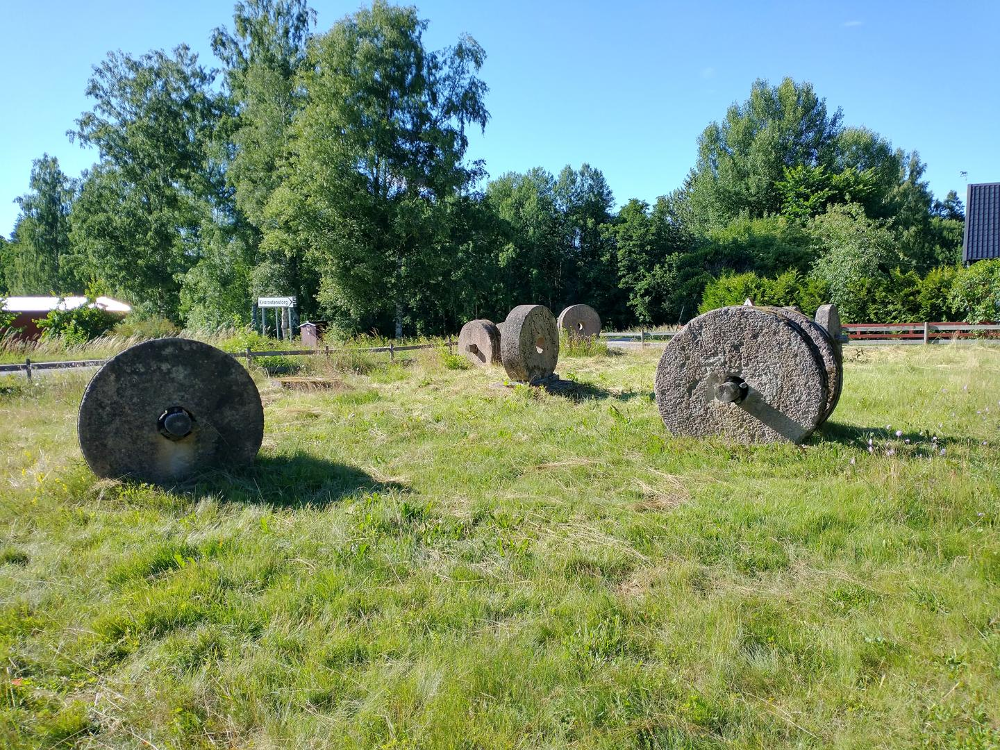
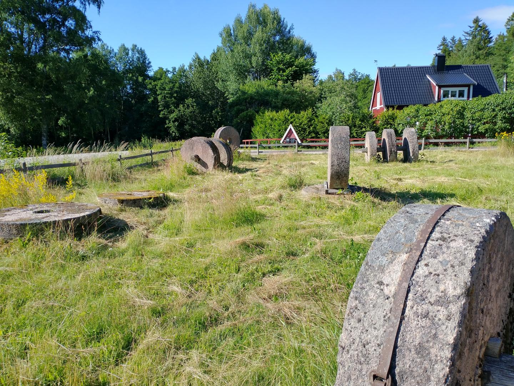
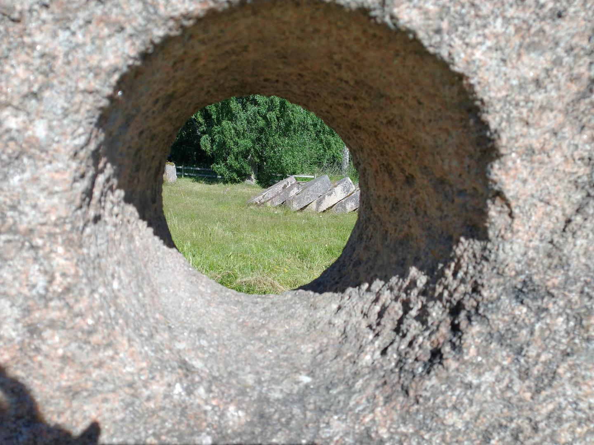
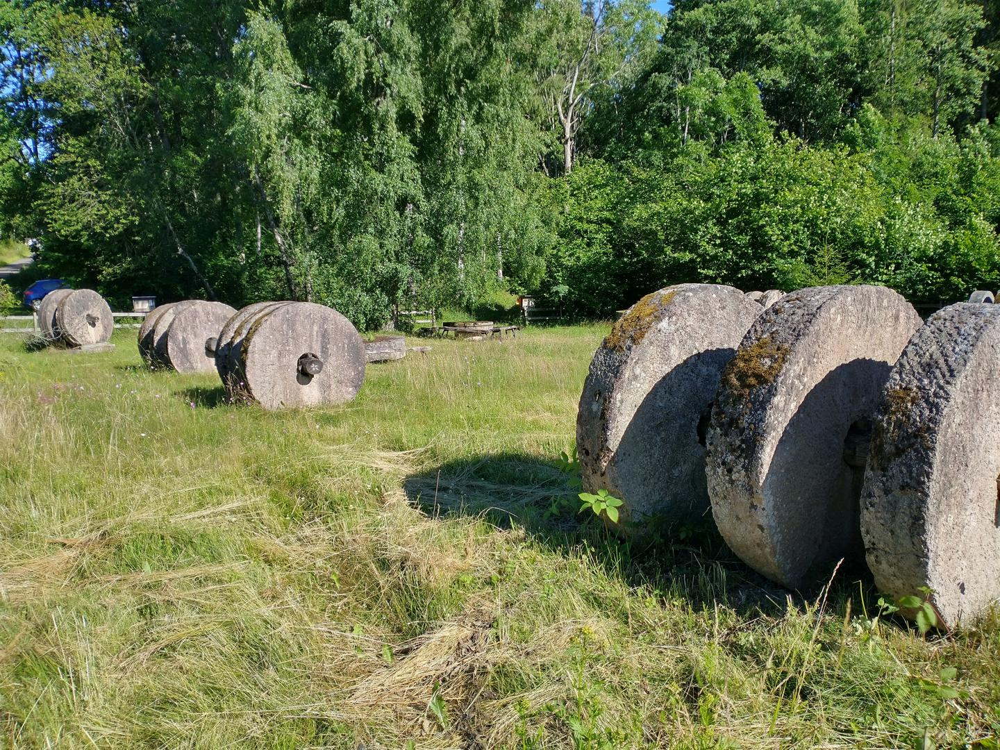
Final verdict
- Cool historical museum'ish site
- You could say it rocks. 😎
- 100:- / 30meter mine @ 0°
- Pretty close by
- Repeating text fragments on display pieces
- 4/5 Would recommend
Chronological (or something ¯\_(ツ)_/¯ )
- Next: Factorio designs, pt 1
- Prev: WSL2 & USB Serials
- Prev: WSL2 & USB Serials